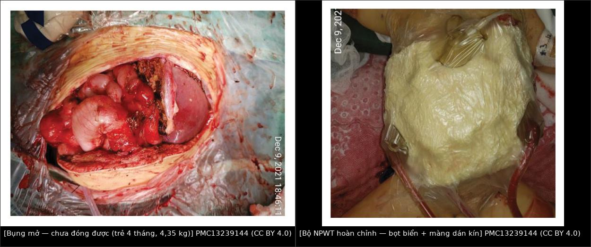
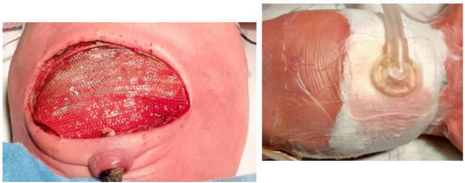
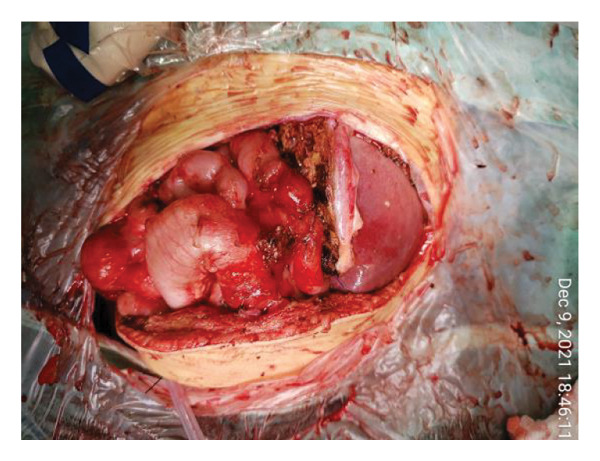
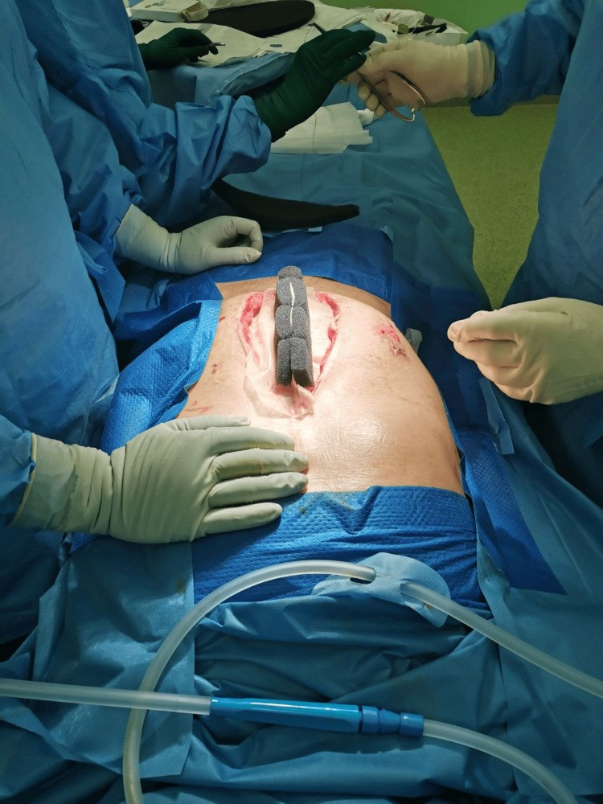

688 — Đóng bụng tạm thời & liệu pháp áp lực âm (NPWT) ở trẻ sau mở bụng giải áp / Temporary abdominal closure and negative pressure wound therapy in children
Tags: pattern:bung-mo vung:thanh-bung protocol:NPWT score:bjorck-1A-4
Mức chắc chắn (certainty): tổng hợp y văn (literature synthesis) — ngưỡng/kỹ thuật từ tổng quan có hệ thống và review đọc trực tiếp (PMC13581991, PMC13337969, PMC13239144), ca nguyên văn sơ sinh (PMC13072599), ngưỡng áp lực trẻ em từ khảo sát/đồng thuận (PMC3390295). Chưa có thử nghiệm ngẫu nhiên riêng cho mức áp lực ở trẻ — đây là khoảng trống bằng chứng phải nói rõ.
1. Tổng quan bệnh học – cơ chế hình ảnh
- Định nghĩa: bụng mở tạm thời (open abdomen, OA; laparostomy) = cố ý không đóng cân (fascia) sau mổ, che tạng bằng vật liệu tạm, để mổ lại có kế hoạch và đóng thì sau khi phù giảm. Đây là bước tiếp theo của mổ giải áp trong hội chứng khoang bụng (xem bài 646).
- Chỉ định (3 nhóm — theo review 2026, PMC13337969):
- Sinh lý: huyết động không ổn định, cần mổ cấp cứu nhiều lần (damage control); toan chuyển hóa/nhiễm toan; hạ thân nhiệt.
- Giải phẫu: không thể đóng cân nếu không gây căng — phù tạng nặng, mất miền (loss of domain), thoát vị hoành bẩm sinh/thành bụng bẩm sinh, ghép gan mảnh quá lớn (GRWR ≥ 2,5–3,5%) ở trẻ.
- Hậu cầu: nhiễm trong ổ bụng không kiểm soát được nguồn trong một lần mổ, dự kiến second look.
- Ngưỡng áp lực ở TRẺ (khác người lớn — bắt buộc nhớ):
- IAP bình thường ở trẻ bệnh nặng: 7 ± 3 mmHg.
- IAH ≥ 10 mmHg; độ I 10–12, độ II 13–15, độ III 16–18, độ IV > 18 mmHg (bảng adapt WSACS của Kaussen 2012; một số bản adapt khác dùng III 16–19 và IV ≥ 20 — luôn ghi rõ bản đang dùng, đừng trộn hai bảng).
- ACS = IAP ≥ 10 mmHg + rối loạn chức năng cơ quan mới, với APP = MAP − IAP.
- Hệ quả thực hành: ngưỡng của người lớn (≥ 12 mmHg; ACS > 20 mmHg) KHÔNG dùng cho trẻ — trẻ có MAP thấp nên chỉ cần IAP 10–15 mmHg đã mất tưới máu tạng (PMC3390295).
- TẠI SAO NPWT có tác dụng (cơ chế, không phải "thần dược"):
- Hút dịch + giảm phù gian bào → giảm thể tích tạng → giảm lực căng thành bụng.
- Tăng tưới máu vi mô và tạo mô hạt trên bề mặt cân/tạng.
- Quan trọng nhất — kéo mép cân vào giữa (fascial medialization), nhưng chỉ khi có lực kéo trung gian chủ động (dynamic fascial traction/mesh-mediated traction). NPWT đơn thuần không thắng được co kéo bên của cân:
- NPWT đơn thuần: đóng cân thì đầu 18–59%.
- NPWT + dynamic traction: 77–100%.
- Nhóm ghép: 80–90% đóng thì đầu ở ca chọn lọc; mục tiêu đóng ngày 5–7 (PMC13337969).
- TẠI SAO áp lực phải THẤP ở trẻ (vật lý): lực hút tuyệt đối = áp suất × diện tích; bụng trẻ diện tích nhỏ nhưng thành bụng mỏng, ít mỡ, tạng non, nên cùng một mmHg gây chèn ép tương đối lớn hơn lên tĩnh mạch cửa, mảnh ghép gan và quai ruột. Vì vậy:
- Người lớn: thường −75 đến −125 mmHg.
- Trẻ/nhũ nhi: −50 và −75 mmHg là mức hay dùng nhất; dải ghi nhận −10 đến −125 mmHg.
- Sơ sinh non tháng: ca NEC toàn bộ 1.570 g dùng −20 mmHg với film dẫn lưu trong ổ bụng, mổ lại sau 72 giờ (PMC13072599).
- Ghép gan nhi: dùng −40 đến −60 mmHg dao động, và bài báo nêu rõ áp lực cao kiểu 125 mmHg có thể làm giảm tưới máu mảnh ghép (PMC13239144).
- Số liệu nền của nhóm nhũ nhi (tổng quan hệ thống 38 nghiên cứu, 226 nhũ nhi, 161 bụng mở — PMC13581991):
- Thời gian NPWT trung vị 14 ngày (IQR 10–33,5; khoảng 1–180 ngày).
- Kết cục đóng: 47% lành thì hai (secondary intention), 53% đóng thì ba (delayed primary); chỉ 3,7% cần tạo hình bằng mảnh ghép/vạt.
- Biến chứng nhẹ và ít: kích ứng da, 2 ca nhiễm trùng; 1 ca giảm SpO₂ do quấn băng ngoài quá chặt (ca đó đặt NPWT −80 mmHg rồi quấn thêm băng quanh bộ dressing) — bài học: không quấn thêm băng ngoài.
- Số liệu người lớn để so sánh (EuraHS 2023, trích trong PMC13337969): thời gian bụng mở trung bình 20,8 ngày → tử vong 27,9%, rò ruột–khí quyển (EAF) ~7%. Đây là lý do phải đóng sớm, không "để bụng mở cho tiện".
2. Mẫu hình + chẩn đoán phân biệt theo hình thái (gamut)
- Mẫu hình 1 — "bụng mở + sốt/dịch đục sau 48–72 giờ": nghĩ nhiễm vết mổ/viêm phúc mạc còn sót, ổ tụ dịch, hoại tử ruột, rò ruột mới. Chốt bằng mổ lại (second look), không bằng CT đơn thuần — vì dressing NPWT chứa khí và kim loại làm CT khó đọc.
- Mẫu hình 2 — "bụng mở không đóng được sau 7–10 ngày": mất miền (loss of domain), frozen abdomen, mép cân co cứng, mô hạt phủ cân. Đây là nhóm cần dynamic traction sớm, không chờ.
- Mẫu hình 3 — "khí trong ổ bụng trên X-quang bụng mở": 4 khả năng — khí trong bọt biển NPWT (hay gặp nhất, hình ảnh "bong bóng" đều trong ô băng), khí trong ruột, khí tự do thật (tràn khí màng bụng), khí trong ổ áp-xe. Chốt bằng đối chiếu vị trí với bộ dressing + mổ lại, không tự động mở bụng vì "có khí".
- Mẫu hình 4 — "bụng mở + suy dinh dưỡng, sụt cân": mất dịch–protein qua bề mặt bụng mở (có thể hàng lít/ngày ở người lớn); đây là chỉ định nuôi ăn sớm và bù dịch có kiểm soát, không phải biến chứng nhiễm.
- Gamut theo mức độ dính (phân loại Björck sửa đổi 2016 — dùng để quyết định còn đóng được hay không):
- 1A sạch, không dính; 1B nhiễm, không dính; 1C có rò ruột, không dính.
- 2A/2B/2C như trên nhưng đã bắt đầu dính (developing fixation).
- 3A/3B frozen abdomen (dính dày, mất miền).
- 4 frozen abdomen + rò ruột–khí quyển (EAF) — nặng nhất.

3. Bảng so sánh phân biệt các kiểu đóng bụng tạm thời (ma trận đối chiếu)
| Kỹ thuật (entity) | Đặc điểm/hình ảnh đặc trưng | Chốt vào (rule-in) | Chốt loại (rule-out) | Gợi ý xác nhận |
|---|---|---|---|---|
| Bogota bag (túi nilon vô khuẩn) | Túi 3 L may vào mép cân; không hút, không kéo lực | Bụng căng, cần che tạng ngay, rẻ, sẵn có | Không đóng được sau 5–7 ngày; không giảm phù | Theo dõi IAP + đổi sang NPWT nếu kéo dài |
| NPWT đơn thuần | Bọt biển + màng dán + hút liên tục; không có lực kéo mép cân | Cần hút dịch, giảm phù, bảo vệ tạng | Đóng thì đầu chỉ 18–59% → không đủ nếu mục tiêu đóng sớm | Đo khoảng cách mép cân mỗi lần thay băng |
| NPWT + dynamic fascial traction (VAWCM) | NPWT + lưới khâu vào mép cân, siết dần | Đóng thì đầu 77–100%, mục tiêu ngày 5–7 | Không dùng khi cân đã hoại tử/nhiễm nặng | Siết lưới mỗi 48 giờ khi thay băng |
| Wittmann patch / Velcro | Hai tấm dính khâu vào hai mép cân, dán lại từng bước | Cần kéo đều, điều chỉnh tại giường | Không kiểm soát được dịch nếu không kèm NPWT | Ghi lại số lần siết mỗi ngày |
| Đóng da đơn thuần (skin-only) | Chỉ khâu da, cân hở bên dưới | Cứu cánh khi không còn cách nào | Nguy cơ thoát vị thành bụng gần như chắc chắn | Kế hoạch sửa thoát vị sau 6–12 tháng |
| Đóng cân thì đầu (primary fascial closure) | Khâu cân giữa, không căng | Đích cuối cùng — IAP sau đóng < 10–12 mmHg ở trẻ | Không đóng khi còn phù/còn căng | Đo IAP sau khi đóng trước khi rời phòng mổ |

Ranh giới cần nhớ
- NPWT không thay thế việc mổ lại: mục tiêu là đóng sớm, không phải "để yên và chờ".
- Không có "một mức áp lực chuẩn" cho trẻ: tổng quan hệ thống ghi nhận không nghiên cứu nào mô tả cách chọn áp lực; dải dùng thực tế −10 đến −125 mmHg, phổ biến −50 và −75 (PMC13581991). Vì vậy phải chọn theo cân nặng/tuổi + đáp ứng, và ghi lại mức đã dùng.
4. Protocol + phân độ + flowchart
- Bước 1 — Trước khi để bụng mở: đo IAP (bàng quang, thì thở ra) làm mốc; đặt sonde dạ dày + sonde bàng quang; chuẩn bị bộ NPWT cỡ nhỏ (bọt biển cắt theo kích thước vết mổ, không để bọt biển chạm trực tiếp vào ruột).
- Bước 2 — Các lớp của bộ dressing (thứ tự từ trong ra):
- Film nhựa đục lỗ (fenestrated plastic sheet/film dẫn lưu) phủ toàn bộ tạng — lớp bảo vệ chống rò ruột vào bọt biển.
- Bọt biển polyurethane (lỗ 400–600 µm) cắt vừa vết mổ; với vết mổ nhỏ có thể dùng bọt biển trắng PVA (ít mô hạt xâm nhập hơn).
- Màng dán kín (adhesive drape) phủ kín, dán mép 5 cm ra da lành.
- Đầu hút (pad) nối máy, đặt ở vị trí thấp để dịch thoát.
- Bước 3 — Mức áp lực (chọn theo tuổi, ghi vào hồ sơ):
| Nhóm | Áp lực khởi đầu hợp lý | Nguồn/ghi chú |
|---|---|---|
| Sơ sinh non tháng (< 2 kg) | −20 mmHg | Ca NEC 1.570 g (PMC13072599) |
| Nhũ nhi/nhi nhỏ | −50 mmHg | Mức phổ biến nhất trong tổng quan (PMC13581991) |
| Trẻ lớn | −75 mmHg | Mức phổ biến thứ hai; trần thực hành −125 |
| Ghép gan nhi (nguy cơ thiếu máu mảnh ghép) | −40 đến −60 mmHg dao động | PMC13239144 |
| Người lớn (để so sánh) | −75 đến −125 mmHg | PMC13337969 |
- Bước 4 — Theo dõi & thay băng:
- Thay băng/mổ lại mỗi 24–48 giờ (hoặc sớm hơn nếu sốt, dịch đục, mất áp lực).
- Đo IAP mỗi 4–6 giờ trong 48 giờ đầu; IAP ≥ 10 mmHg kèm rối loạn chức năng = ACS (bài 646).
- Mỗi lần thay: đo khoảng cách hai mép cân, đánh giá mô hạt, nhiễm, rò ruột, và siết lưới/traction thêm 1–2 cm nếu mép cân còn mềm.
- Bước 5 — Ngưỡng và thời điểm đóng:
- Đóng khi: hết phù tạng, IAP < 10–12 mmHg, hai mép cân gần nhau không căng, không nhiễm, không rò.
- Mục tiêu: ngày 5–7. Nếu > 3–4 tuần không đóng được → chuyển thoát vị thành bụng có kế hoạch (planned ventral hernia): ghép da lên mô hạt, sửa thành bụng sau 6–12 tháng.
- Bước 6 — Điều trị hỗ trợ có bằng chứng:
- Nuôi ăn đường tiêu hóa sớm 24–48 giờ khi huyết động ổn → tỉ lệ đóng thành bụng thì đầu tới 74% so với nhóm nuôi ăn muộn (PMC13337969).
- Hạn chế dịch tinh thể (goal-directed), tránh phù nặng thêm.
- Giảm đau, giữ ấm, kháng sinh theo ổ nhiễm (không kháng sinh dự phòng kéo dài).
flowchart TD
A[Mổ giải áp / không đóng cân được] --> B[Chọn đóng tạm: film + bọt biển + màng dán + hút]
B --> C{Trẻ cân nặng bao nhiêu?}
C -->|Sơ sinh < 2 kg| D[−20 mmHg]
C -->|Nhũ nhi| E[−50 mmHg]
C -->|Trẻ lớn| F[−75 mmHg]
D --> G[Thay băng 24–48 giờ + đo IAP 4–6 giờ]
E --> G
F --> G
G --> H{Mép cân gần nhau, hết phù?}
H -->|Chưa| I[Thêm dynamic traction, siết 1–2 cm mỗi lần thay]
I --> G
H -->|Rồi, IAP < 10–12| J[Đóng cân thì đầu — mục tiêu ngày 5–7]
H -->|Quá 3–4 tuần| K[Planned ventral hernia + ghép da, sửa sau 6–12 tháng]
J --> L[Đo IAP sau đóng trước khi rời phòng mổ]
5. Biến thể bình thường và cạm bẫy
- Cạm bẫy 1 — áp ngưỡng người lớn cho trẻ: dùng ≥ 12 mmHg hoặc ACS > 20 mmHg sẽ bỏ sót ACS ở trẻ; ngưỡng trẻ là IAH ≥ 10, ACS ≥ 10 + rối loạn chức năng (PMC3390295).
- Cạm bẫy 2 — hút quá mạnh: −125 mmHg ở trẻ sơ sinh/nhũ nhi dễ gây chèn ép, thiếu máu tạng, hoại tử ruột; ca ghép gan nhi nêu rõ áp lực cao kiểu 125 mmHg có thể làm giảm tưới máu mảnh ghép (PMC13239144). Bắt đầu thấp, tăng dần theo đáp ứng.
- Cạm bẫy 3 — quấn băng ngoài: một ca giảm SpO₂ do quấn băng ngoài quá chặt (NPWT −80 mmHg + quấn băng quanh bộ dressing) (PMC13581991). Không quấn thêm băng ngoài lên màng dán.
- Cạm bẫy 4 — tưởng khí trong bọt biển là khí tự do: bọt biển chứa khí tạo hình ảnh khí "ngoài lòng ruột" trên X-quang/CT; luôn đối chiếu với vị trí bộ dressing trước khi kết luận tràn khí/thủng.
- Cạm bẫy 5 — bỏ lớp film bảo vệ ruột: bọt biển tiếp xúc trực tiếp với quai ruột làm tăng rò ruột–khí quyển (EAF) — biến chứng khó cứu nhất. Ở trẻ, bọt biển phải luôn có film/vải bảo vệ bên dưới.
- Cạm bẫy 6 — đóng cân quá sớm: đóng khi còn phù → ACS tái phát, giảm tưới máu mảnh ghép, bục vết mổ. Luôn đo IAP sau khi đóng trước khi rời phòng mổ.
- Cạm bẫy 7 — chỉ dùng NPWT mà không kéo lực: tỉ lệ đóng 18–59% so với 77–100% khi có dynamic traction (PMC13337969) — NPWT một mình là "che tạng", không phải "đóng bụng".
- Biến thể bình thường: mô hạt đỏ tươi, ướt dưới bọt biển là lành tính — không phải nhiễm; chỉ lo khi mủ, mùi, mô xám/hoại tử, hoặc mất áp lực đột ngột (hở màng dán).
6. Tự lượng giá — Blind Quiz
Ca 1 — Bé gái 4 tháng (4,35 kg) ghép gan mảnh lớn, cuối mổ không đóng được cân.

- Gợi ý: GRWR 4,3%, bụng căng, thở máy.
- Câu hỏi: vì sao không đóng cân ngay? Ba việc phải làm trong 24 giờ đầu?
Bấm để hiện đáp án (findings + chẩn đoán)
- Hình ảnh: bụng mở, ruột và gan phủ film; không thể đóng cân nếu không gây căng (mảnh ghép lớn hơn ổ bụng).
- Chẩn đoán: bụng mở tạm thời do mảnh ghép quá lớn (large-for-size graft) — chỉ định giải phẫu.
- Ba việc: (1) film đục lỗ phủ tạng + bọt biển + màng dán + hút −40 đến −60 mmHg; (2) đo IAP 4–6 giờ/lần, mục tiêu ≤ 10–12 mmHg, theo dõi vận tốc tĩnh mạch cửa ≥ 40 cm/s bằng Doppler; (3) nuôi ăn sớm + hạn chế dịch, mổ lại thay băng mỗi 24–48 giờ.
- Nguồn ảnh: PMC13239144, Fig 2a — CC BY 4.0.
Ca 2 — Sơ sinh 32 tuần, 1.570 g, NEC toàn bộ, đã mở bụng.
- Câu hỏi: lớp bên trái là gì và tại sao bắt buộc phải có? Áp lực nào hợp lý?
Bấm để hiện đáp án (findings + chẩn đoán)
- Hình ảnh: (trái) film dẫn lưu trong ổ bụng (intra-abdominal drainage film) đục lỗ phủ ruột; (phải) gạc Kerlix AMD + màng dán kín với đầu hút.
- Vì sao bắt buộc: ngăn bọt biển tiếp xúc trực tiếp quai ruột → giảm nguy cơ rò ruột–khí quyển và hoại tử/chèn ép ruột.
- Áp lực: −20 mmHg, mổ lại sau 72 giờ; bệnh nhi hồi phục, ăn miệng từ ngày thứ 5 sau mổ.
- Nguồn ảnh: PMC13072599, Fig 2 — CC BY-NC-ND 4.0 (giữ nguyên bản, không cắt/ghép).
Ca 3 — Người lớn (để so sánh kỹ thuật): bụng mở sau viêm phúc mạc, đã khâu lưới vào mép cân.

- Câu hỏi: vì sao phải gấp nếp và siết lưới thay vì chỉ đặt bọt biển?
Bấm để hiện đáp án (findings + chẩn đoán)
- Hình ảnh: lưới khâu vào hai mép cân, gấp nếp (plicated) và siết dần; bọt biển + hút đặt trên phần còn hở.
- Chẩn đoán: NPWT + dynamic fascial traction (VAWCM) — kiểu đóng tạm cho đóng cân thì đầu 77–100%, so với 18–59% nếu chỉ NPWT.
- Vì sao: lưới tạo lực kéo trung gian liên tục chống co kéo bên của cân, giữ miền bụng (domain); NPWT chỉ loại dịch và phù.
- Nguồn ảnh: PMC11921756, Fig 9 — CC BY 4.0.
Bài liên quan chéo
- 646 – Hội chứng khoang bụng ở trẻ
- 1625 – Rò ruột–khí quyển (EAF) sau bụng mở ở trẻ: biến chứng của chính bụng mở kéo dài (bước SAU của bài này) (bước trước: đo IAP, phân độ, chỉ định mổ giải áp)
- 649 – Khi trung thất hoại tử & sinh khí ở trẻ (cùng nhóm nhiễm hoại tử, cần mổ lại)
- 640 – Khớp háng nhi: DDH, Perthes, SCFE & NAT
- 644 – Phục hồi chức năng hô hấp & chuyển tiếp ở trẻ
Ảnh
688_bung-mo_Anh-mo_PMC13239144-f2a.jpg— bụng mở ở trẻ 4 tháng, 4,35 kg (PMC13239144, CC BY 4.0).688_NPWT_Anh-mo_PMC13239144-f2c.jpg— bộ NPWT hoàn chỉnh (PMC13239144, CC BY 4.0).composite_bung-mo-den-NPWT.jpg— ảnh ghép letterbox "bụng mở → NPWT" (CC BY 4.0).688_lop-dressing_Anh-mo_PMC13072599-f2.jpg— film trong ổ bụng + gạc/màng dán ở trẻ non tháng (PMC13072599, CC BY-NC-ND 4.0, giữ nguyên bản).688_NPWT-tren-luoi_Anh-mo_PMC11921756-f9.jpg— NPWT trên lưới gấp nếp (PMC11921756, CC BY 4.0) — xemimages/CREDITS.md.
Không dùng để chẩn đoán độc lập khi chưa có người hướng dẫn.